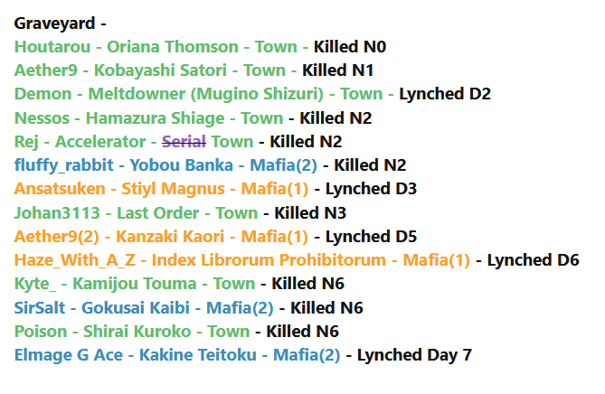

Uh
lemme think
from top to bottom
zone is a nulltown, i havent seen quite what im looking for from him yet though
blitz is a townlean just based off of tone, dont really have more on that front
wind probtown, tone isnt shit
kaif twtbw in a lot of places
dont remember much from nika but all of my memories of them are from when they were trying to spark discussion so townlean on that
min iso looks a bit better on second readthru so i kinda wanna go back and look at the wagon on them eventually
i remember thinking merc was towny day one but i havent seen them at all today so shrugze
[quote=“Darling in the Franxx SFM - [19/21] | Day 2, post:4426, topic:87703”]
Just talking from a general game-wide perspective on where I’m at right now:
I’m trying to focus on developing and working with my townreads today to narrow the PoE for wolves. I think my accuracy in catching wolves is… mediocre at best, but I know that I am pretty good at recognizing town as town, and I am good at working with people I’m on the same wavelength with to solve the game.
I have townreads of varying degrees on: Lemonfairy, WindwardAway, Guill, Aelin, Helz, Mercenary , and Nightingale (though the latter two are very weak). Silviu is mason. I’m trusting Windward on min for now, so they can go on this list as well.
I have null/Haven’t Look At/ reads on: DerpsALot, Blitz, Lukundo, Nikamura, ErikaFurudo, Tilgarial, and Zone . Kaif is in this weird spot where there is a bunch of conflicting reads on him, and I haven’t bothered to read him after Day 1 ended. I want to try and resolve/read some of these players when I have some more time and not just real-timing.
I am somewhat actively scumreading Wisp , but I don’t even have high confidence he is going to flip scum or not. He’s just weird for me because normally, we are able to recognize each other as town pretty quickly and work together to lunch the wolves. He’s super walled off and is not even trying to work with me at all, which is why I am interrogating him on why he believes the things he believes in.
So yeah, this is where I’m at. Gonna head off to work relatively soon, but at the moment I want kinda flip/continue to interrogate Wisp because knowing his alignment would clear up a lot of things about the other players in this game.
I just… haven’t been able to get to Town on him, and normally I’m able to do that a couple of IRL days when we’re playing together.
[/quote]
my PoE rn is dependent on how Tilg/Wisp flip. I dont mean to toot my own horn and you’ll have to take my word for it since my home forum is down, but my accuracy in catching mafia is really good but I have lost at lylo to mafia once @Guillotina and lost in lylo to independents (I think they are called neutrals here) 4 times. T^T If offsite game linking is allowed I can link my 2nd most recent game (it’s from a few months back but for me it’s the game right before my last. I killed 1 mafia with a vig shot and then led the lynches on 5 mafia in a multiball in a row). Granted I don’t have as much time as I did back then and this post count for this forum is much higher.
I like all your TL except I’m still null on merc and Nightingale
Agree with the null list as well except obv I know I’m town, and I have a town lean on Zone and a null lean on Kaif.
agree that wisp flip might clear up a lot of things about other players as well. I don’t remember them doing much if any scum hunting day 1. I just see that he’s suspicious of Aelin but I’ve missed his reads on her if he’s put forth any. Plus there was one point on day one where he said something to effect that he’s happy to sheep whoever which left a bad impression of me for being opportunistic. I need to iso him and see if I can find the post.
1 Like
why did the quote not work?
1 Like
I was responding to this post. from here on is my reply. can ignore previous message they have the same content but this one is less confusing.

ss of the game flow from that game. as you can see. I lynched 5 mafia in a row and killed one myself. :x @Prophylaxis
there were multiple Town vigs. I only shot once and killed mafia.
Also it was my first time playing on that site and I only knew two of the players. similar to how this is my first game on this site and I only know Guillotina and Luk X-x
so I had no meta to help me.
Still I would consider myself an average player cuz I’m not good at appearing townie. I try to keep my meta unchanged and hard to read despite alignment so that meta can’t be used against me. And going by my win/loss ratio I’ve lost way more than I’ve won.  so you know, form your own conclusions every game.
so you know, form your own conclusions every game.
Hmm. Maybe they selected Marl as a factional then or there’s also a doc.
I’m inclined to believe the second since this is rolemadness-y and claimvigs/docs are quite common. Whatever. Setup speculation on a closed game won’t lead to anything useful.
if there is a doctor they either didn’t protectt Marl or the scum have a strongman.
Night 0 kills, gross
1 Like
If y’all excuse me I don’t think I’m reading the entire game when I get available tbh because it’s just too much
hi ^^
The thing is that it doesn’t make sense for scum to allow a townie to clear themselves. Nikamara’s rush to roleclaim in a panic wasn’t great because as town she’s giving valuable information to wolves, but on the other hand she more or less cleared herself and gave the wolves one more townread to deal with (and a PR at that).
I saw exactly 0 obvtown posts from her lol. However, I saw 1 that looked slightly towny and it was when I was interacting with her earlier toDay and asking what she thought of Merc’s attempt to townclear her. It was the post where she said that Merc’s retraction of the townclear was the weirdest part about the read on Erika, and I feel like a wolf would be less likely to grab at the retraction than the townread itself.
Maybe I’m just being nitpicky, though.
I wouldn’t throw it out of the range of possibilities tbh.
My first thought on Erika was that she was a neut, though, and as I said it was based on another game I played where the neut kept voting no-hug in order to achieve her win condition. I could still realistically see Erika being a neut because I don’t get too many scumvibes from her, but she’s also not doing much to help the town here.
Ah ok, got it. I didn’t think the second post was towny, but I’m just biased since I got tagged in it and I’ve been somewhat defending min so it actually raised my suspicion a bit. But there aren’t as many other people in this game who have so much experience with min and are also active enough to answer that question, I guess, and I already vouched for min’s defense being NAI since D1 so whatever. And min isn’t asking me to say they’re town, either; they’re only asking me to verify that their defensive behavior is NAI, which is objectively true.
Ftr I think I’m slightly better at reading min than Marl is, but that’s an opinion lol. I’m still not getting majorly wolfy pings from min here and I’m holding onto the assumption that I can read them decently well after having recently wolfed with them, and that the few posts I thought were towny from their slot are town AI.
Actually I’m curious now as to whether Wiisp thought anything Aelin said or did in their neighborhood chat was wolfy in particular, or if he was just avoiding being active there because he was already dead certain Aelin is a wolf.
As I’m still catching up on reading, I might find the answer to this within the next 300 posts…
[quote=“ErikaFurudo, post:4361, topic:87703”]
i’ve already elaborated
^ this is the line of reasoning I thought was townier than not, or at least not scummy, coming from Erika’s slot.
Did you read my EoD1 analysis and my questioning of Blitz too? (I think the post you quoted was his answer to my question anyway, though, and the rest of it was what Lemon summarized too, so maybe you didn’t miss much if you didn’t read my post and I’m pretty sure everyone ignored it anyway lol.)
Looking for who’s online sounds like an angleshooty tactic, and scum likes to lurk without posting for that matter anyway, so it’s useless to consider doing that. Speaking of which, I’m among the players who didn’t debate the mason claims and accepted them as truth, and gave my reasons in the thread for it, so I don’t know why you aren’t looking into my slot for doing so.
If scum have a claimvig then how many night kills went missing?
I’m willing to consider your reads as potential leads that I should be looking at, but my gut says Tilgarial is town because they don’t feel at all like they did when they wolfed against me recently. I don’t know if that counts as a meta read on them or what, but I’m not super interested in their slot as of right now as a result, and their vote is literally the only thing that makes me wonder if I’m wrong. The thing is, though, that in NUF 2 FM, Tilgarial came across as having very rational reads - possibly too rational, and their votes reflected this and got them widely townread. Here I wouldn’t really call their vote on PKR rational, and I’m not actually sure they’d vote him if they’re a wolf. Anyway, the other three you mentioned are more worth checking out, in my opinion, and any of those would be good investigation targets.
Welcome to the game! (gonna assume someone else gave you a tldr by the time I actually hit reply on this post, but if not, I made an EoD1 summary at the start of D2 if that’s of any use)
Yeah, Wiisp said something sarcastic about a CFD 10 min before EoD, Aelin went “if you insist” and voted him, then Silviu and you voted him like a minute after that. At least that’s what I saw when I went through EoD to see what I’d missed,during the night.
Huh, really? Yeah there’s potential for 3ps and it’s been neither denied nor confirmed so far.
That’s why I thought there was potential for a Wiisp/Helz scumteam, actually. Not totally sure but if one of them flips scum then I’d take a good hard look at the other. It had to do with wiisps D1 and one of his early posts mentioning Proph, where he said if it came between voting Helz or Proph, he’d vote Helz first because Proph is his friend, but he voiced a scumread on Helz anyway and had his vote on him around that time too. It just read like distancing to me at the time, and I still think it’s a bit weird. Not the part about Proph but that he’d vote Helz first, so I think he could’ve been distancing from Helz and not Proph like a lot of people were wondering about.
Eh I’m just plopping the slot back into the nulls, which is not that far from where I had it before tbh. Definitely reevaluating this later.
Well, that was indeed the purpose of my tagging Tilgarial with that question.
I do see your points in ISOing Tilga and now I’m thinking they’re a perfectly valid slot to cop check tbh. I take back what I said earlier in this post (but trying to find it and delete it is a pain because lol mobile and I keep deleting random quote tags, so it’s best I don’t try to scroll up and edit things).
Part of my problem is that I want Tilgarial to be town because it would be fun to solve together, but they’re kind of… not super solvey. They were solvey as scum, even, and so I attributed their spotty reads and analyses with multitabling several games at once and chose to ignore it, but you’re right. Tilgas readlist in response to my prompting them is underwhelming.
I haven’t made a case on min but I think min townread Tilga off the same early lack of performative stuff we’ve seen in Tilgas scum game. But it’s not like people can’t change up how they wolf, and it’s not like there’s much else going for Tilga. As I said, I placed a gutread on them (like I did on min, to a degree), and it might not be such a great read after all. I like your case on Tilga fwiw.
You reminded me I liked that specific post from Tilgarial as well. Meh, my reads are all over the place now.
You should find something else to read me off besides just tone tbh, it’s definitely not going to work 100% of the time and it’s already failed you once before.
It took like an hour and a half to catch up on reading and making this post (on mobile, yes) and now it’s 3:30 am so I’m just gonna crash lol. Tag me if you want me to reply to stuff. I might just quit backreading until enough people are out of the game or I get killed because I don’t have the time to spend on thoroughly annotating the entire thread like I’ve been doing for only 1.5 day phases so far.
6 Likes
*most likely scum out of the people jumping wagons EOD1 (i.e., not taking into account of anything beyond that time period)
I retain the right to wait and see if that read sticks with me or not. I find that casting a vote immediately makes me more prone to be biased towards the vote I made and might not give as much attention to possible alternatives as I would like.
2 Likes
shrug
it’ll probably be the most consistent though, especially as time goes on
agree lol
No it won’t, I unintentionally alter my tone as town and I can intentionally alter my tone as scum.
Anyway it’s an irrelevant discussion here so I’ll save it for later
On a more relevant note, I feel like whatever I do to make reads on certain slots (namely Wiisp, Blitz, Lemon and Tilga right now) results in my backtracking on a read later. I know it’s an very non-towny thing to do but I feel like the more I analyze the slots, the less clear they become. And things should become more clear, not less, although at the very least it means I’m not confbiased so I guess that’s a good thing.